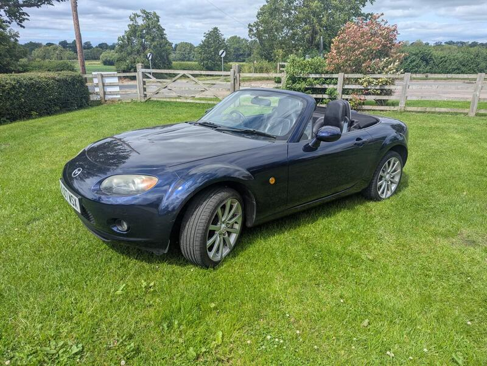
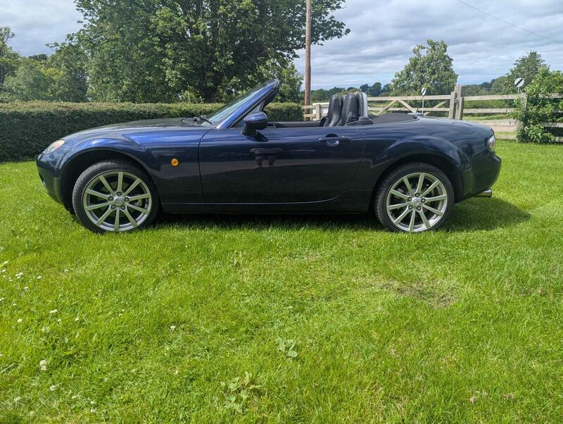
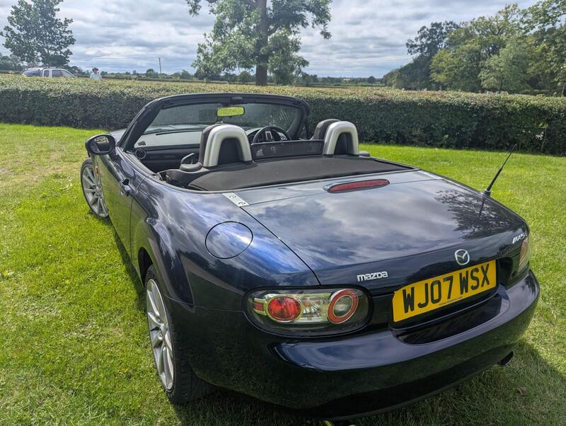
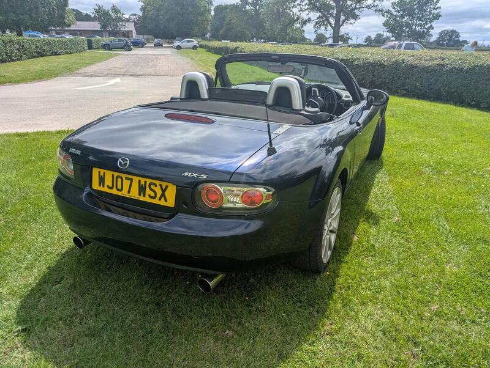

Seller photos from the AutoTrader ad.
Mazda MX-5 2.0i Sport
A cared-for 2.0 Sport. The ECU swap means you must verify the true mileage.
Key facts
| Price | £2,700 |
|---|---|
| Year | 2007 |
| Miles | 123,386 |
| Model | Mazda MX-5 2.0i Sport |
| Colour | Blue |
| Registration | 2007 (07 reg) |
| Owners | 9 owners |
| Service history | Not stated |
| MOT | Not stated |
| Seller | Private |
| Location | Leicester |
| From GU7 | 100 mi (AutoTrader) |
| Checked | 13 Oct 2026 |
Why buy it
- Fresh diff oil, rear brakes and pads; stainless exhaust (ad)
- Owner-maintained 2.0 Sport
Things to check
The ECU was replaced after an immobiliser fault, so the displayed mileage is lower than the real figure (ad). Check the MOT history for the true mileage
Aftermarket exhaust; confirm it passes MOT noise limits
- Mazda MX-5 NC / NB weak spots
Rear subframe, rear arches and sill ends; NB sills and chassis rails. Underseal can hide rot. Engine mostly bulletproof; timing-chain tensioner, seizing calipers, rear diff leaks, cracking coolant tank.
Seller says (extract)
“Lovely little MX-5 in a stunning blue colour. Serviced and looked after by me since I bought it, new diff oil, rear brakes and pads etc to keep it happy. It has a stainless exhaust system that burbles and is purposeful but not loud or crass, can send videos if interested. The old immobilizer immobilised the car so I have had to get a whole new ECU installed (I looked after it) so this comes with a lower mileage on screen that it has done, but I have all the paperwork showing what it was etc. shows 56603 on screen but had new ECU see picture Clean MOt with 1 minor. Starts every time. Arches all good - see photos. A few age related scratches paint but otherwise is great condition…”